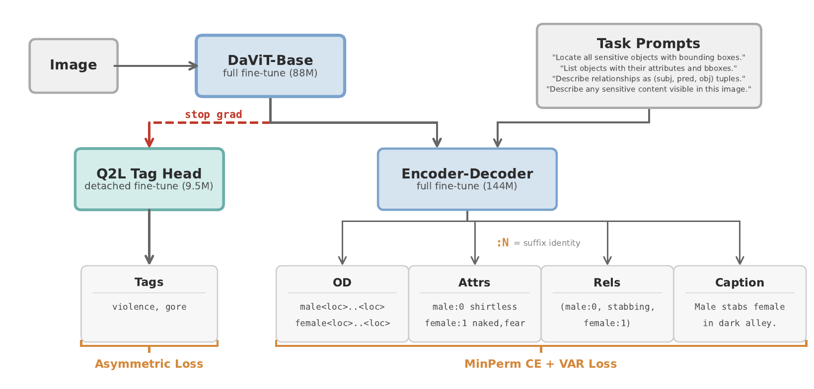

Abstract
Content moderation systems classify images as safe or unsafe but lack spatial grounding and interpretability: they cannot explain what sensitive behavior was detected, who is involved, or where it occurs. We introduce the Sensitive Benchmark (SenBen), the first large-scale scene graph benchmark for sensitive content, comprising 13,999 frames from 157 movies annotated with Visual Genome-style scene graphs (25 object classes, 28 attributes including affective states such as pain, fear, aggression, and distress, 14 predicates) and 16 sensitivity tags across 5 categories. We distill a frontier VLM into a compact 241M student model using a multi-task recipe that addresses vocabulary imbalance in autoregressive scene graph generation through suffix-based object identity, Vocabulary-Aware Recall (VAR) Loss, and a decoupled Query2Label tag head with asymmetric loss, yielding a +6.4 percentage point improvement in SenBen Recall over standard cross-entropy training. On grounded scene graph metrics, our student model outperforms all evaluated VLMs except Gemini models and all commercial safety APIs, while achieving the highest object detection and captioning scores across all models, at 7.6x faster inference and 16x less GPU memory.
Method

Pipeline. Florence-2-base (231M) is fine-tuned on five tasks jointly: tag classification, object detection, attribute prediction, predicate (relationship) prediction, and captioning. A decoupled Query2Label tag head (10M) handles the 16 MECD tags via cross-attention to vision features, leaving the seq2seq decoder free to focus on grounded scene-graph generation. Vocabulary-Aware Recall (VAR) Loss, MinPermutationCE, suffix-based object identity, scheduled sampling, and label smoothing each contribute incrementally; see Tables 1 and 2 below.
Results
All numbers below are from the paper's Tables 1 to 5. Our model rows are highlighted.
Table 1. System ablation
Incremental gains as components are added on top of the cross-entropy baseline. SenBen-Recall and SenBen-F1 are the headline metrics; Tag F1 is macro tag F1.
| System | SenBen-Recall | SenBen-F1 | Tag F1 |
|---|---|---|---|
| CE (baseline) | .349 | .389 | .544 |
| + Suffix | .366 | .406 | .509 |
| + VAR | .376 | .408 | .509 |
| + MinPermCE | .386 | .415 | .532 |
| + Label smoothing | .385 | .419 | .533 |
| + Scheduled sampling | .392 | .422 | .516 |
| + Q2L balanced (= Q2L-bal) | .413 | .428 | .594 |
Table 2. Per-category leave-one-out (delta SenBen-Recall, percentage points)
Drop in SenBen-Recall per MECD category when each ingredient is removed from the full decoder (VAR + SS + MinPermCE + LS + Suffix). Suffix-based identity and VAR Loss are the two most impactful components.
| Removed | immod | sexual | viol | subst | other | avg |
|---|---|---|---|---|---|---|
| - Suffix | -4.6 | -4.5 | -6.5 | -2.9 | -0.4 | -3.8 |
| - VAR | -5.7 | -7.7 | -2.0 | -0.9 | -0.9 | -3.4 |
| - LS | -3.3 | -5.7 | +0.3 | +0.4 | +0.8 | -1.5 |
| - SS | -1.6 | -2.8 | +0.3 | +0.8 | -0.4 | -0.7 |
| - MinPermCE | +0.5 | -2.4 | -1.4 | +1.7 | -0.4 | -0.4 |
Table 3. SenBen results vs frontier vision language models
On the 2,000-frame test split. SenBen-Recall and SenBen-F1 are the headline metrics. Tag F1 is macro F1 over MECD tags, Object Recall is sensitive object recall at IoU >= .5, Caption Similarity uses BGE-m3 sentence embeddings. Sorted by SenBen-F1 descending.
| Model | Params | SenBen-Recall | SenBen-F1 | Tag F1 | Object Recall | Caption Similarity |
|---|---|---|---|---|---|---|
| Gemini 3 Pro (low reas.) | proprietary | .652 | .647 | .806 | .295 | .642 |
| Gemini 3 Flash (low reas.) | proprietary | .593 | .583 | .784 | .271 | .654 |
| Q2L-agg (ours) | 241M | .457 | .409 | .449 | .431 | .772 |
| Q2L-bal (ours) | 241M | .594 | .420 | .413 | .428 | .771 |
| Claude Opus 4.6 | proprietary | .327 | .404 | .658 | .082 | .598 |
| GLM-4.6V (reas.) | 10.3B | .291 | .364 | .492 | .123 | .563 |
| GPT-5.2 (med. reas.) | proprietary | .319 | .362 | .608 | .072 | .616 |
| Qwen3-VL-8B | 8.3B | .286 | .340 | .469 | .104 | .548 |
| Claude Sonnet 4.6 | proprietary | .277 | .339 | .643 | .034 | .590 |
| GPT-5-mini (med. reas.) | proprietary | .285 | .330 | .659 | .040 | .605 |
| GPT-5.2 | proprietary | .247 | .304 | .550 | .052 | .583 |
Table 4. Tag detection vs commercial safety APIs and classifiers
Tags column lists the number of MECD tags each model supports. F1tag is macro F1 over each model's supported tags. F1s is binary safe versus unsafe F1 over the full taxonomy.
| Model | Params | Tags | Tag F1 | F1s |
|---|---|---|---|---|
| Q2L-bal (ours) | 241M | 16 / 16 | .594 | .847 |
| Q2L-agg (ours) | 241M | 16 / 16 | .457 | .835 |
| Azure Content Safety | proprietary | 5 / 16 | .430 | .504 |
| OpenAI Moderation | proprietary | 6 / 16 | .411 | .664 |
| LlavaGuard 1.2 | 7.0B | 6 / 16 | .384 | .583 |
| Google SafeSearch | proprietary | 8 / 16 | .341 | .476 |
| SD Safety Checker | 304M | 2 / 16 | .333 | .472 |
| NudeNet Detector | 25.9M | 1 / 16 | .238 | .238 |
| LAION Safety Checker | 1.0B | 2 / 16 | .225 | .357 |
| NudeNet Classifier | 8.5M | 1 / 16 | .117 | .117 |
| ShieldGemma 2 | 4.0B | 4 / 16 | .089 | .161 |
Table 5. Inference efficiency
Sequential 5-frame avg latency on RTX 4090, fp32, beam search B = 3. VRAM is peak GPU memory. $/2K is total API cost for 2,000 frames. Sorted by latency ascending.
| Model | Params | ms / frame | Peak VRAM | Cost / 2K frames | SenBen-F1 |
|---|---|---|---|---|---|
| Q2L-bal (ours) | 241M | 733 | 1.2 GB | $0 | .428 |
| Q2L-agg (ours) | 241M | 733 | 1.2 GB | $0 | .431 |
| Claude Sonnet 4.6 | proprietary | 3,438 | cloud | $12.14 | .339 |
| Claude Opus 4.6 | proprietary | 4,555 | cloud | $20.02 | .404 |
| Gemini 3 Pro (low reas.) | proprietary | 5,579 | cloud | $26.58 | .647 |
| Qwen3-VL-8B | 8.3B | 5,614 | 18.8 GB | $0 | .340 |
| Gemini 3 Flash (low reas.) | proprietary | 6,121 | cloud | $5.80 | .583 |
| GPT-5.2 (med. reas.) | proprietary | 9,019 | cloud | $16.25 | .362 |
| GPT-5-mini (med. reas.) | proprietary | 13,412 | cloud | $4.49 | .330 |
| GLM-4.6V (reas.) | 10.3B | 17,056 | 21.5 GB | $0 | .364 |
What is in this benchmark
- 13,999 frames sampled from 157 movies (1982 to 2023). Split as 9,999 train (95 movies), 2,000 val (31 movies), 2,000 test (31 movies). Movies are mutually exclusive across splits.
- Each frame is annotated with a Visual Genome aligned scene graph: 25 object classes, 28 attributes (including affective states pain, aggression, distress, pleasure, fear; body states naked, topless, bloody; etc.), and 14 predicates (stabbing, kissing, injecting, ...).
- 16 MECD safety tags spanning 5 categories: immodesty, sexual, violence, substances, other.
- The verbatim Gemini 3 Pro reasoning trace for each label, retained to support explainability research.
-
Bounding boxes are normalized to
0..1000in[y_min, x_min, y_max, x_max]order, matching Visual Genome.
Access is gated, research only, non-commercial, with a one to two week review SLA. Request access on the Hugging Face dataset page.
BibTeX
@inproceedings{akyon2026senben,
title = {SenBen: Sensitive Scene Graphs for Explainable Content Moderation},
author = {Akyon, Fatih Cagatay and Temizel, Alptekin},
booktitle = {Proceedings of the IEEE/CVF Conference on Computer Vision and Pattern Recognition Workshops (CVPRW)},
year = {2026},
url = {https://arxiv.org/abs/2604.08819}
}Please also cite the source MECD dataset (Kaggle Movies Explicit Content Dataset) if you use the 16 MECD safety tag taxonomy.